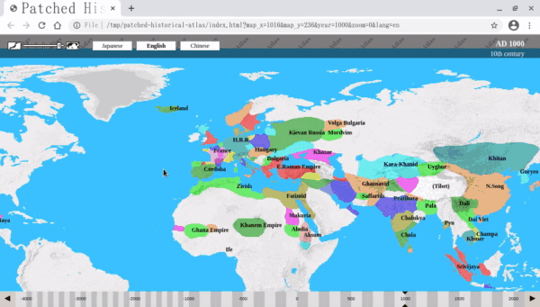

<meta name="viewport" content="width=device-width, initial-scale=1">
<link rel="stylesheet" href="github-markdown-dark.css">
<style>
	.markdown-body {
		box-sizing: border-box;
		min-width: 200px;
		max-width: 980px;
		margin: 0 auto;
		padding: 45px;
	}

	@media (max-width: 767px) {
		.markdown-body {
			padding: 15px;
		}
	}
</style>
<article class="markdown-body">
<h1 id="-patched-historical-atlas-on-github-pages-https-foxy-null-github-io-history-page-index-html-"><a href="https://foxy-null.github.io/history-page/index.html">Patched Historical Atlas on GitHub Pages</a></h1>
<p></p>
<h2 id="what-is-this-">What is this?</h2>
<p>This is just a modification to <a href="http://x768.com/w/twha.en">World Historical Atlas</a> for some convenient features.</p>
<ul>
<li>Support mouse drag on the year bar.</li>
<li>Enable bookmarking of the &quot;current view&quot; on your browser.</li>
<li>Add keyboard shortcuts for forward/backward animations, opening Wikipedia, etc.</li>
<li>Add period bars for regions and persons.</li>
<li>Center the tapped point on a tablets.</li>
</ul>
<h2 id="usage">Usage</h2>
<ul>
<li>Open <a href="https://foxy-null.github.io/history-page/index.html">this page</a></li>
</ul>
<h2 id="keyboard-shortcuts">Keyboard Shortcuts</h2>
<p>See <a href="HELP.md">HELP</a>.</p>
<h2 id="license">License</h2>
<p>See LICENSE file.</p>
</article>
